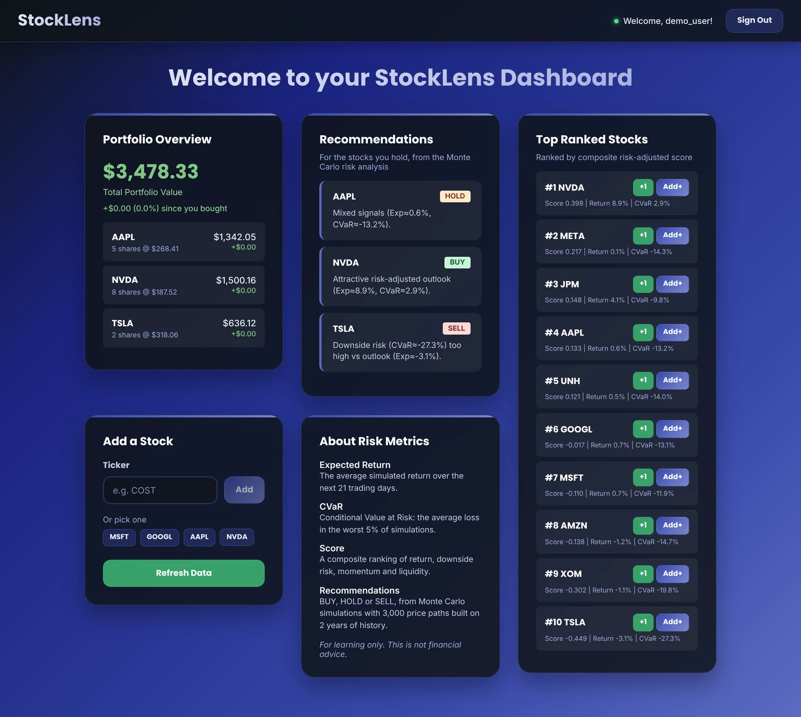

Project
StockLens
A stock recommendation site for people who are new to investing, built with three teammates at SteelHacks 2025. I built the API and most of the interface, and a teammate wrote the risk model behind it.

What it does
You sign in and add the stocks you hold. For each one the app says buy, hold or sell, and shows the numbers behind the call. It also ranks a watchlist of ten stocks.
The calls come from a Monte Carlo simulation: 3,000 possible price paths over the next 21 trading days, built from two years of price history. From those it works out the expected return and the average loss in the worst 5% of cases.
What I built
- the FastAPI backend: accounts, portfolio endpoints and a SQLite database
- the link between my teammate’s risk model and the API, so recommendations and rankings run on real market data
- fallback prices for when Yahoo Finance fails
- the React app: the sign-in form and the dashboard, with the portfolio, the recommendations, the top 10 ranking, and a dialog for choosing how many shares to add
Going back to it
A lot of it was rushed, the way hackathon code is. In November 2026 I went back and cleaned up my part with Claude:
- passwords are salted and hashed, and signing in returns a token that every request has to carry
- every request and response is checked against a Pydantic model
- buying a stock you already hold adds to that holding, where it used to make a second row
- the frontend moved from Create React App to Vite, and the 600-line dashboard became small components
- the API has tests that run the real model on made-up prices
The model itself is unchanged.